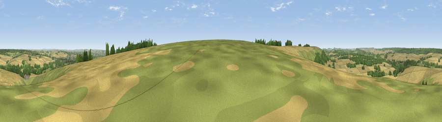

Viewpoint near Burcombe
#15124 in England · top 15% of its area beats it · near Burcombe · path 94 mWhere it is
The exact computed spot (SU 06575 29475). Click the marker for map links.
Public access: the nearest public right of way is about 94 m away — the final stretch may cross private land. Computed from Natural England's CRoW access layer and OpenStreetMap rights of way — not the legal definitive map. Always verify locally.
The view, rendered

A 360° render of this exact spot computed from the terrain model, tree cover and land cover — summer colours, afternoon light, calibrated against photographs of famous viewpoints. Real trees, hedges and buildings will differ in detail.
The panorama
Grey silhouette: terrain skyline in each direction (720 bearings, Earth curvature and refraction included). Dashed green: skyline with trees (+15 m) and buildings (+8 m) as obstacles. Blue strip: how far the ground is visible on each bearing.
Where the view opens
Wedge length = distance to the farthest visible ground on that bearing (vegetation-aware). Rings at 10, 25 and 50 km.
What fills the view
60% cropland · 26% grassland · 13% woodland ·
Angular shares of the visible panorama (visual magnitude), not map area. Landscape diversity 0.42 (0–1 Shannon).
Key numbers
More beautiful places nearby
The staircase of upgrades: each row has a higher view potential than everything closer. Driving times are estimates from straight-line distance, calibrated against real road routing — check an actual route before setting out.
| Place | Direction | Drive | Score |
|---|---|---|---|
| Bishopstone Down | SSE · 0 km | ~1 min | 57.6 |
| Hydon Hill | WSW · 2 km | ~6 min | 61.2 |
| Marleycombe Hill | SSW · 8 km | ~16 min | 63.3 |
| Trow Down | SW · 12 km | ~23 min | 67.5 |
| Monk's Down | WSW · 16 km | ~28 min | 74.4 |
| Viewpoint near Berwick St John | WSW · 17 km | ~29 min | 78.2 |
| Viewpoint near Studland | S · 48 km | ~69 min | 80.9 |
| Viewpoint near Studland | S · 48 km | ~69 min | 82.2 |
51.06457, -1.90755 · source: screening · position refined by local search. Computed location — check access rights before visiting.